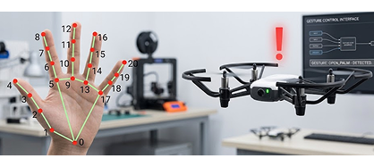
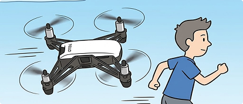
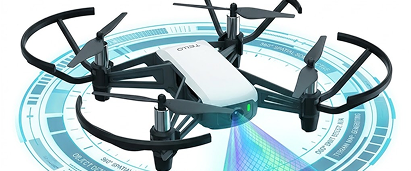
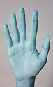
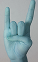
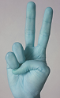
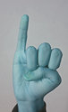
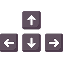
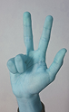
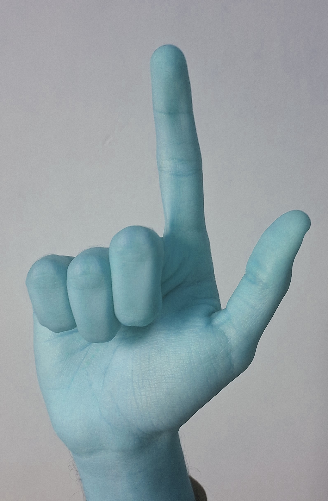

Visão Computacional Aplicada ao Controle Inteligente de Drones.
Sistema de Interface Humano-Máquina (IHM) para o drone DJI Tello EDU. Uma alternativa de pilotagem intuitiva e acessível que substitui controles tradicionais por interações com gestos manuais e modos de voo autônomos utilizando MediaPipe e OpenCV.
Funcionalidades do Código
Controle por Gestos e Navegação.
Pilotagem completa (decolagem, pouso, eixos dimensionais e rotações) utilizando mapeamento de mãos em tempo real. Inclui travas de segurança para ativações acidentais.

Rastreamento Autônomo ("Me Siga").
O drone utiliza a própria câmera e algoritmos de detecção facial para centralizar o usuário e manter uma distância constante de forma autônoma.

Scan de Rostos 360º.
Execução de varredura panorâmica automática, detectando e contabilizando o número de faces presentes no ambiente mapeado.

Arquitetura e Comandos
• Mão Fechada: Decolar / Armar.

• Mão Aberta: Pousar.

• "Símbolo do Rock": Modo Controle por Gestos.

• "Sinal de Paz": Modo de Comandos Especiais.








Desenhos feitos por: Uncle_Zah
Arrow Keys by flaticon.com